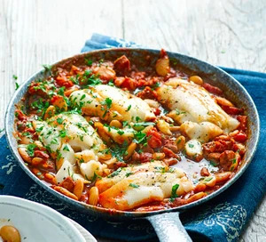

Cod & Chorizo Stew

Serves 4
Ingredients
- 1 tbsp oliver oil
- 1 onion, finely chopped
- 200g cooking chorizo, chopped
- 400g can chopped tomatoes
- 4 cod fillets
- 400g can butter beans, drained
- Parsley, roughly chopped
Method
- Heat the oil in a deep frying pan and add the onion. Cook over a medium heat for 5 mins until starting to soften. Add the chorizo and cook for another few mins to release the oil. Coat the onion in the chorizo oil, then tip in the tomatoes. Fill the can with water and tip that in too. Season and bring to the boil.
- Once boiling, season the cod fillets and nestle into the pan. Reduce the heat and gently simmer for about 7 mins. Gently mix in the butter beans and cook for 1-2 mins more until hot. Scatter with parsley and serve in bowls.